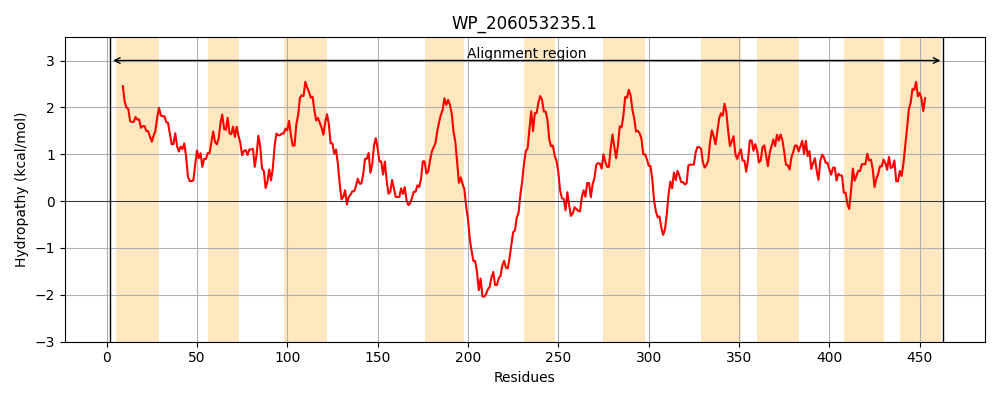
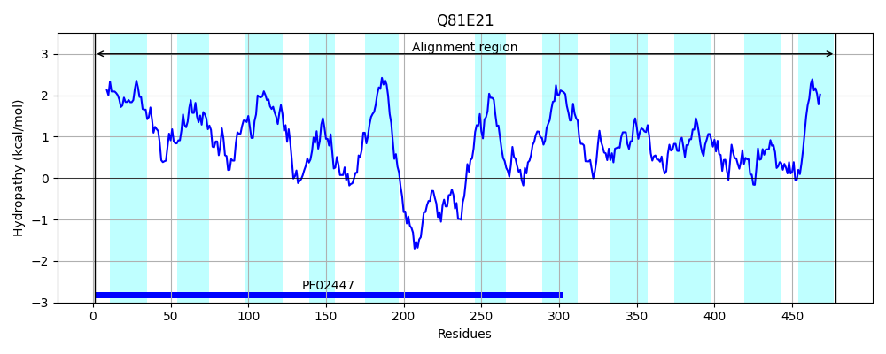
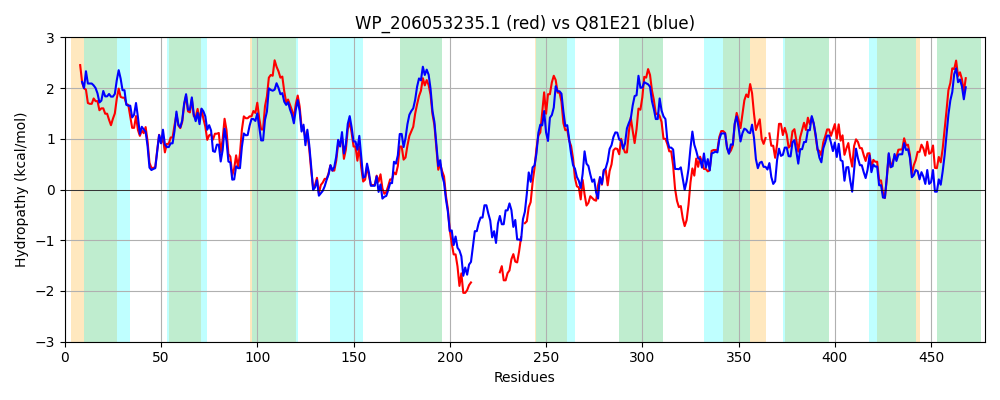

Hit Accession: Q81E21
Hit TCID: 2.A.8.1.14
Hit Description: gnl|BL_ORD_ID|15723 gnl|TC-DB|Q81E21|2.A.8.1.14 D-beta-hydroxybutyrate permease OS=Bacillus cereus (strain ATCC 14579 / DSM 31) GN=BC_2175 PE=4 SV=1
Mach Len: 478
e:0.000000
Query TMS Count : 10
Hit TMS Count: 11
TMS-Overlap Score: 7.300000
Predicted Substrates:CHEBI:10983;(R)-3-hydroxybutyrate
BLAST Alignment:
Score: 1292 , Bit scores: 502 bits, E-value: 3.1e-176, Alignment length: 478, Percentage identity: 53
Query: 2 MSVIIALAALALLMLAAYRGYSVILFAPIAALGAVLVTDPSAVGPAFTGLFMEKMVGFVKLYFPVFLLGAVFGKLIELSGFSRSIVAAAIRILGRRHAIPVIVLVCALLTYGGVSLFVVAFAVYPFAAELFRQSGIPKRLIPATVALGAFSFTMDALPGTPQIQNIIPTSFFGTNAWAAPWLGLIGSLFIIIFGLLWLERQRRKAQARGEGY--------------GTDLQNEPETPD-DIDLPHPLIAIAPLLLVGVLNLLFTHWIPQWYGASHELTLPGLAKPVVTEVGKITAIWAVQAALLSGIVLVLVCGYRNIRGRLAEGSRTAVGGAILAAMNTASEYGFGAVIAALPGFLVLSKALAA-IPNPLLNEAISVTVLAGITGSASGGMSIALAAMSETFVAAAHAANIPLEVLHRVAAMASGGMDTLPHNGAVITLLAITGLSHRQAYGGIFAITVIKSLAVLFVIVTFYVTGI 463
M ++I L AL+LLM AYRG+SVILFAPI AL AV +T+PS V P F+ +FMEKMVGF+KLYFPVFLLGA+FGK++E+SG + SI I ++G + I IVL+ A+LTY GVS++VV FAVYPFAA+LFRQ+ IPKRLIP T+ LGA +FTMDALPG+PQIQN+IPT+FF T+ +AAP LG++G++F++ GLL+LE +R+KA+A GEGY + +N P T + +I LI PL+LVGV+N +FT IP+WY + + + G+ E+ + IW+V+ AL+ GI+ L+ ++ + G T++GGA+LA MNT +E+GFG VIAALPGF ++ ++A NPL+N A++ +LAGITGSASGGM I L+AM + F+AAA+ +IPLEV+HR+ +MASGGMDTLPHNGA+IT+L +TGL+H+Q+Y IFAIT++K++AV VI + +TG+
Sbjct: 1 MELVIILLALSLLMFVAYRGFSVILFAPIFALFAVFLTEPSYVLPFFSNIFMEKMVGFIKLYFPVFLLGAIFGKVVEMSGIADSIAKTIIELVGEKRTILAIVLMGAILTYSGVSVYVVVFAVYPFAAKLFRQANIPKRLIPGTIVLGAVTFTMDALPGSPQIQNVIPTTFFKTDIYAAPILGIVGAIFVLTVGLLYLESRRKKAKAEGEGYFGFNDGNTEMAASLQVEQKNMPLTNNIEITRAQQLITFIPLILVGVMNKVFTIMIPKWYPSGFDFSAIGMKAFGKVELSAVVGIWSVELALIIGILTTLLLYWKRVVTGFQAGLNTSIGGALLATMNTGAEFGFGGVIAALPGFAIMRDGISATFTNPLVNGAVTTNILAGITGSASGGMGIVLSAMGDKFIAAANQFDIPLEVMHRIVSMASGGMDTLPHNGAIITILTVTGLTHKQSYKDIFAITILKTVAVFLVIAFYTLTGL 478 | Protein Hydropathy Plots: |
|---|
|  |  |
Pairwise Alignment-Hydropathy Plot:
|
|---|
|  |